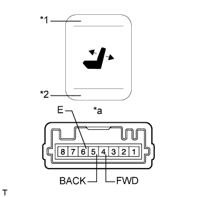
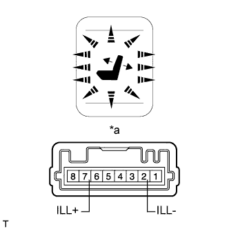
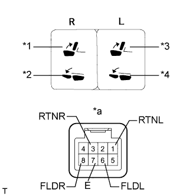
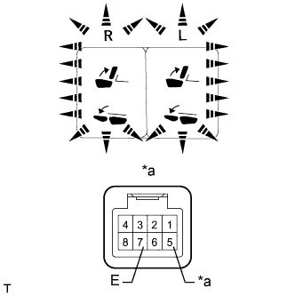

ПЕРЕКЛЮЧАТЕЛЬ ЭЛЕКТРОПРИВОДА СИДЕНЬЯ (для заднего сиденья № 2) > ПРОВЕРКА |
| 1. ПРОВЕРЬТЕ ПЕРЕКЛЮЧАТЕЛЬ ЭЛЕКТРОПРИВОДА ЗАДНЕГО СИДЕНЬЯ (с левой стороны) |
|  |
Измерьте сопротивление в соответствии со значениями, приведенными в таблице ниже.
| Контакты для подключения диагностического прибора | Положение переключателя | Заданные условия |
| 4 (FWD) - 6 (E) | Переключатель UP нажат | Менее 1 Ом |
| 5 (BACK) - 6 (E) | Переключатель DOWN нажат |
| *1 | Выключатель "вверх" |
| *2 | Выключатель "вниз" |
| *a | Устройство с отсоединенным жгутом проводов (переключатель электропривода заднего сиденья в сборе) |
|  |
Подайте напряжение аккумуляторной батареи на разъем переключателя электропривода сиденья и проверьте, включилась ли подсветка переключателя.
| Условия измерений | Заданные условия |
| Положительный (+) вывод аккумуляторной батареи → 7 (ILL+) Отрицательный (-) вывод аккумуляторной батареи → 2 (ILL-) | Освещение включается |
| *a | Устройство с отсоединенным жгутом проводов (переключатель электропривода заднего сиденья в сборе) |
| 2. ПРОВЕРЬТЕ ПЕРЕКЛЮЧАТЕЛЬ ЭЛЕКТРОПРИВОДА ЗАДНЕГО СИДЕНЬЯ (с правой стороны) |
Измерьте сопротивление в соответствии со значениями, приведенными в таблице ниже.
| Контакты для подключения диагностического прибора | Положение переключателя | Заданные условия |
| 4 (FWD) - 6 (E) | Переключатель UP нажат | Менее 1 Ом |
| 5 (BACK) - 6 (E) | Переключатель DOWN нажат |
| *1 | Переключатель UP |
| *2 | Переключатель DOWN |
| *a | Устройство с неподсоединенным жгутом проводов (переключатель электропривода заднего сиденья в сборе) |
Подайте напряжение аккумуляторной батареи на разъем переключателя электропривода сиденья и проверьте, включилась ли подсветка переключателя.
| Условия измерений | Заданные условия |
| Положительный (+) вывод аккумуляторной батареи → 7 (ILL+) Отрицательный (-) вывод аккумуляторной батареи → 2 (ILL-) | Освещение включается |
| *a | Устройство с неподсоединенным жгутом проводов (переключатель электропривода заднего сиденья в сборе) |
| 3. ПРОВЕРЬТЕ ПЕРЕКЛЮЧАТЕЛЬ СКЛАДЫВАНИЯ СИДЕНЬЯ № 1 |
|  |
Измерьте сопротивление в соответствии со значениями, приведенными в таблице ниже.
| Контакты для подключения диагностического прибора | Положение переключателя | Заданные условия |
| 1 (RTNL) - 7 (E) | Нажат переключатель RETURN LH (раскладывания левого сиденья) | Менее 1 Ом |
| 6 (FLDL) - 7 (E) | Нажат переключатель FOLD LH (складывания левого сиденья) | |
| 3 (RTNR) - 7 (E) | Нажат переключатель RETURN RH (раскладывания правого сиденья) | |
| 8 (FLDR) - 7 (E) | Нажат переключатель FOLD RH (складывания правого сиденья) |
| *1 | Переключатель RETURN RH (раскладывания правого сиденья) |
| *2 | Переключатель FOLD RH (складывания правого сиденья) |
| *3 | Переключатель RETURN LH (раскладывания левого сиденья) |
| *4 | Переключатель FOLD LH (складывания левого сиденья) |
| *a | Устройство с неподсоединенным жгутом проводов (переключатель складывания сиденья № 1) |
|  |
Подайте напряжение аккумуляторной батареи на разъем переключателя складывания сиденья и проверьте, включилась ли подсветка переключателя.
| Условия измерений | Заданные условия |
| Положительный (+) вывод аккумуляторной батареи → 5 (+B) Отрицательный (-) вывод аккумуляторной батареи → 7 (E) | Освещение включается |
| *a | Устройство с неподсоединенным жгутом проводов (переключатель складывания сиденья № 1) |